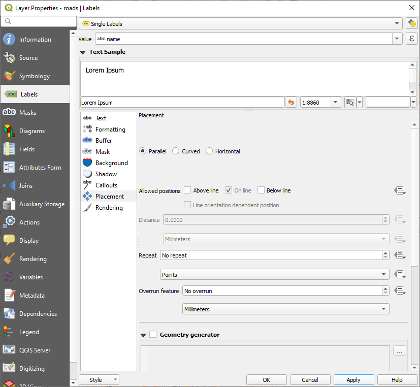
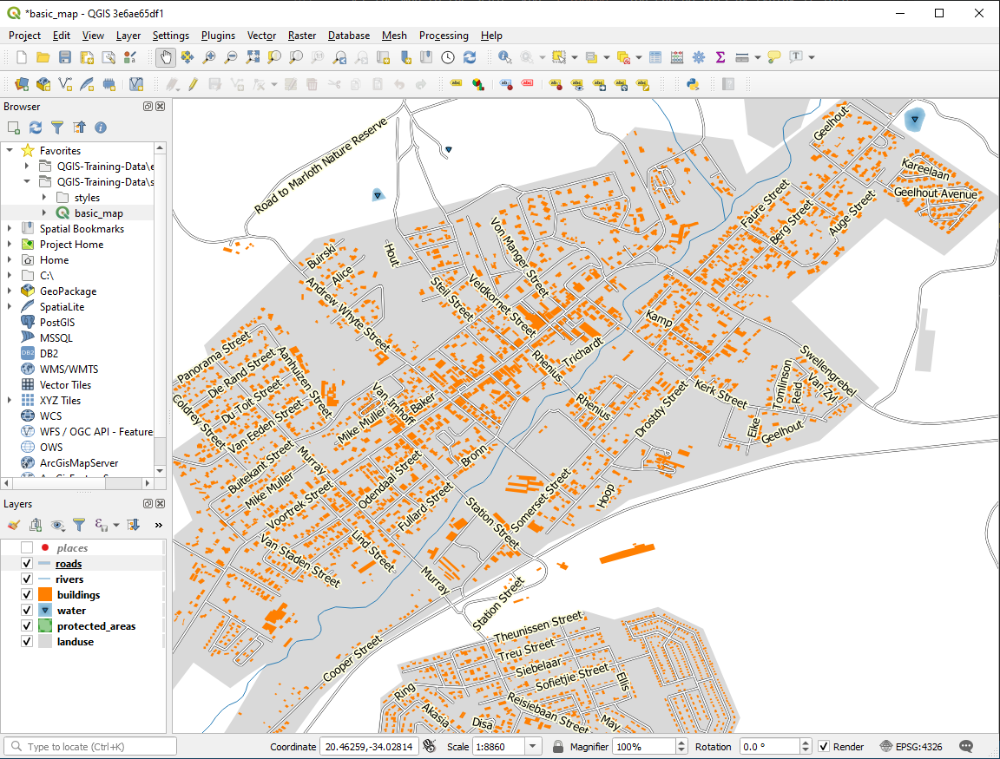
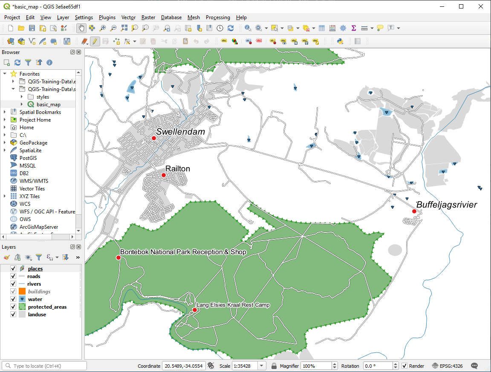

重要
翻訳は あなたが参加できる コミュニティの取り組みです。このページは現在 100.00% 翻訳されています。
3.2. レッスン: ラベル
オブジェクトに関する情報を表示するためにラベルを地図に追加することができます。ベクタレイヤはそれに関連するラベルを持つことができます。ラベルの内容はレイヤの属性データに依存します。
このレッスンの目標: 役に立ち見栄えの良いラベルをレイヤに適用します。
3.2.1. ★☆☆ （初級レベル） 理解しよう: ラベルを使う
まず、  ボタンがGUIに表示されていることを確認します:
ボタンがGUIに表示されていることを確認します:
メニューに進みます
ラベルツールバー にチェックマークが付いていることを確認します。チェックマークがない場合は、 ラベルツールバー をクリックし、アクティブにします。
レイヤ パネルの
placesレイヤをクリックし、ハイライト表示させます。- ツールバーボタンをクリックして、 レイヤスタイル パネルの ラベル タブを開きます。
ラベルなし から
単一定義 に切り替えます属性のどのフィールドをラベルに使用するかを選択する必要があります。前のレッスンで、あなたは
nameフィールドがこの目的に最も適していると判断しました。値リストから
nameを選択します。
適用 をクリックします。
今、地図にはこのようなラベルが表示されるはずです:

3.2.2. ★☆☆ （初級レベル） 理解しよう: ラベルオプションを変更する
以前のレッスンで地図に選んだスタイルによっては、ラベルが適切にフォーマットされておらず、ポイントマーカーと重なっていたり、遠すぎたりしたのにお気づきかもしれません。
注釈
上記では、 ラベルツールバー の ボタンを使って、 レイヤスタイル パネルを開きました。 シンボロジ と同じように、 レイヤスタイル パネルと レイヤプロパティ ダイアログの両方で同じラベルオプションが利用できます。ここでは、 レイヤプロパティ ダイアログを使用します。
placesレイヤをダブルクリックし、 レイヤプロパティ ダイアログを開きますラベル タブを選びます
左側のオプションリストで テキスト が選択されていることを確認し、ここに示されているものと同じになるようにテキスト書式設定を更新します:
適用 をクリックします。
そのフォントは、ユーザーにとってより大きく、より馴染みやすいかもしれませんが、その読みやすさは、その下にレンダリングされるレイヤーに依存していることに変わりはありません。これを解決するために バッファ オプションを見てみましょう。
左側のオプションリストから バッファ を選びます
テキストバッファを描画 の隣のチェックボックスをチェックし、ここに示されているものと同じになるようにオプションを選びます:

適用 をクリックします。
着色されたバッファまたは境界線が場所ラベルに追加されて地図上で見分けやすくなりました:

ポイントマーカーに相対的なラベルの配置に取りかかります。
左側のオプションリストから 配置 を選びます
ポイントの周り を選び、 距離 の値を
2.0ミリメートルに変更します:
適用 をクリックします。
ラベルはもはやポイントマーカーに重なっていません。
3.2.3. ★★☆ （中級レベル） 理解しよう: レイヤシンボルの代わりにラベルを使う
多くの場合、ポイントの位置はそれほど特定する必要はありません。例えば、 places レイヤのポイントのほとんどは、町全体や郊外を指しており、そのような地物に関連する特定のポイントは、大きな縮尺ではそれほど特定的ではありません。実際、あまりに具体的なポイントを与えると、地図を読んでいる人がしばしば混乱します。
例を挙げると: 例えば、世界地図上では欧州連合のために与えられた点はポーランドのどこかにあります。 European Union のラベルの付いたポイントがポーランドにあるので、地図を読んでいる人には欧州連合の首都はポーランドにあるように見える場合があります。
ですから、この種の誤解を防ぐためにポイントシンボルを非アクティブ化してラベルに完全に置き換えるのがよい場合があります。
QGISではラベルが参照するポイントの直上にラベルの位置を変更することによってこれをすることができます。
placesレイヤの レイヤプロパティ ダイアログの ラベル タブを開きますオプションリストから 配置 オプションを選びます
点からのオフセット ボタンをクリックします
ポイントマーカーとの相対位置でラベルの位置を設定することのできる 象限 オプションが現れます。この場合、ラベルは点を中心に配置したいので中央の象限を選択します:

通常通りレイヤの シンボロジ を編集し、 マーカー の大きさを0.0にしてポイントシンボルを隠します：

適用 をクリックすると、このような結果が表示されます:

地図を縮小すると、大きな縮尺では重なりを避けるためにいくつかのラベルが消えているのがわかるでしょう。多くの点を持つデータセットを扱う場合、これが望ましい場合もありますが、この方法では有用な情報が失われてしまう場合もあります。このような場合を扱うもう一つの可能性があり、このレッスンの後の練習で取り上げます。とりあえず縮小して、ツールバーにある  ボタンをクリックし、何が起こるか見てみましょう。
ボタンをクリックし、何が起こるか見てみましょう。
3.2.4. ★★☆ （中級レベル） 自分でやってみよう: ラベルのカスタマイズ
ラベルとシンボルの設定をリセットして、ポイントマーカーとラベルオフセットを
2.0ミリメートルにします。
答え
これで地図はマーカーポイントを表示し、ラベルは 2mm ずれているはずです。マーカーとラベルのスタイルは、両方が地図上ではっきり見えるようにする必要があります。
地図の縮尺を
1:100000に設定します。これは、 ステータスバー の 縮尺 ボックスに入力することで行うことができます。この縮尺で見るのに適したラベルに変更します。
答え
一つの解として、最終的にこのような結果が得られます：

この結果に到達するためには：
フォントサイズ
10を使用ポイントの周りの距離に
1.5mmを使用マーカーサイズに
3.0 mmを使用さらに、この例では この文字でラップ処理 オプションを使用しています:

このフィールドに
空白を入力し、 適用 をクリックすると同じ効果が得られます。この例では、地名の一部が非常に長いため、名前が何行にもなってしまい、使い勝手が悪くなっています。この設定は、あなたの地図にもっとふさわしいかもしれません。
3.2.5. ★★☆ （中級レベル） 理解しよう: ラインにラベルを付ける
これでラベルの作成がどのように動作するかがわかりましたが、まだ別の問題があります。ポイントとポリゴンにラベルを付けるのは簡単ですが、ラインはどうでしょうか? ポイントと同じようにラベルを付ける場合、このようになります:

roads レイヤのラベルをわかりやすくするために、再フォーマットすることにします。
placesレイヤを非表示にして、邪魔にならないようにしますplacesのラベルと同じようにroadsレイヤのラベルの 単一定義 をアクティブにしますフォントの 大きさ を
10にして、より多くのラベルを表示できるようにしますSwellendam 町域を拡大します。
ラベル タブの 配置 タブで、次の設定を選択します
 テキストのスタイリングにデフォルト値が使用されているため、ラベルが非常に読みにくいことが分かると思います。 テキスト の 色 を濃い灰色か黒に、 バッファ の 色 を薄い黄色に更新してください。
地図は縮尺に応じてこのように見えます:
 いくつかの道路名が複数回表示されますがいつも必要だとは限りません。これを防ぐには:
レイヤプロパティ ダイアログの ラベル タブで レンダリング オプションを選び、図のように 重複ラベルを除去するために接続する線を結合 を選びます。

OK をクリックします
もう1つの有用な機能はラベルを付けるには短すぎる地物にラベルが描画されないようにするものです。
同じ レンダリング パネルで、 これより地物が小さい場合は省略 の値を
5.00 mmに設定し、 適用 をクリックしたときの結果に注意してください。別の 配置 の設定も試してみてください。前に見たように、この場合、 水平 オプションは良いアイデアではないので、代わりに 線に沿って湾曲 オプションを試してみましょう。
ラベル タブの 配置 パネルで 線に沿って湾曲 オプションを選びます
これが結果です:
このように、以前は表示されていたいくつかのラベルが非表示になっています。これは、曲がりくねった道路の線に沿わせながら、読みやすくするのが難しいからです。また、他のラベルは、道路と道路の間の空間に浮かんでいるのではなく、道路を追跡するため、より有用になります。どちらのオプションを使うかは、より有用なもの、より見栄えの良いものを選ぶことができます。
3.2.6. ★★★ （上級レベル） 理解しよう: データ定義による設定
roadsレイヤのラベリングを無効にしますplacesレイヤのラベリングを再び有効にします ボタンで
ボタンで placesの属性テーブルを開きますそれには各 レコード の都市部のタイプを定義する興味深い
placesという フィールド があります。このデータを使って、ラベルのスタイルに影響を与えることができます。placesラベル パネルで テキスト パネルに移動しますスタイル の下の イタリックテキスト ボタンの隣にある
 ボタンをクリックして、 を選び、 式文字列ビルダ を開きます：
ボタンをクリックして、 を選び、 式文字列ビルダ を開きます：
の下にある
placeをダブルクリックし、 全ユニーク をクリックします。これにより、このレイヤーのplaceフィールドのすべての固有値が一覧表示されます。テキストエディタで=を追加し、townをダブルクリックします。または、次のようにテキストエディターで
"place" = 'town'と直接入力することもできます。OK を2回クリックします。

place フィールドが town と一致するすべての場所のラベルがイタリック体で表示されていることに注目してください。

3.2.7. ★★★ （上級レベル） 自分でやってみよう: データ定義による設定を使う
注釈
私たちはいくつかの高度なラベル付け設定を示すために、ここで少し先に飛んでいます。上級レベルでは以下のことが何を意味するか知っていることを想定しています。そうでなければこのセクションは跳ばし、必要な題材をカバーしてから戻って来て下さい。
placeの属性テーブルを開く ボタンをクリックして、編集モードにします
ボタンをクリックして、編集モードにします ボタンを使用して新しい列を追加します
ボタンを使用して新しい列を追加しますこのように構成します:
これを使用して、異なるタイプの場所（
placeフィールドの各キー）ごとにカスタムフォントサイズを設定します
答え
編集モードのまま、
FONT_SIZEの値を好きなものに設定します。この例では、町(towns)は16、郊外(suburbs)は14、地方(localities)は12、集落(hamlets)は10を使用しています。変更を保存して編集モードを終了することを忘れないでください
placesレイヤの テキスト フォーマットオプションに戻り、フォントサイズ データ定義オーバーライドドロップダウンの 属性フィールド で FONT_SIZEを選びます：
上記の値を使用した場合、結果はこのようになるはずです：

3.2.8. ★★★ （上級レベル） ラベル付けのさらなる可能性
このコースですべてのオプションを網羅することはできませんが、 ラベル タブには他にも多くの有用な機能があることを知っておいてください。スケールベース・レンダリングの設定、レイヤ内のラベルのレンダリング優先度の変更、レイヤ属性を使ったあらゆるラベルオプションの設定などが可能です。また、ラベルの回転やXY位置などのプロパティを設定し（属性フィールドがある場合）、メインの レイヤーラベルオプション ボタンに隣接するツールでこれらの属性を編集することも可能です：


{kind=link}
{kind=link}
{kind=link}
(これらのツールは必要な属性フィールドが存在して、編集モードの場合にアクティブになります。)
ラベル付けのシステムの可能性をもっと探ってみて下さい。
3.2.9. 結論
動的なラベル作成のためにレイヤの属性を使用する方法を学びました。これによりあなたの地図の情報量を増やし、地図をスタイリッシュにすることができます!
3.2.10. 次は?
属性によって地図に視覚的な違いを生じさせる方法がわかりました。オブジェクトそれ自体のシンボロジを変更するのに属性を使用することはどうでしょうか? 次のレッスンのトピックです!